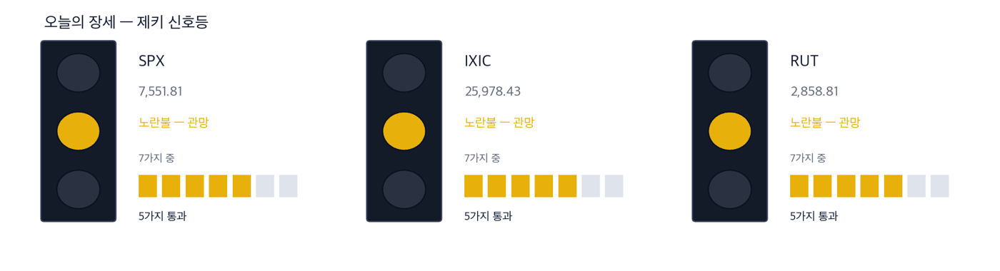
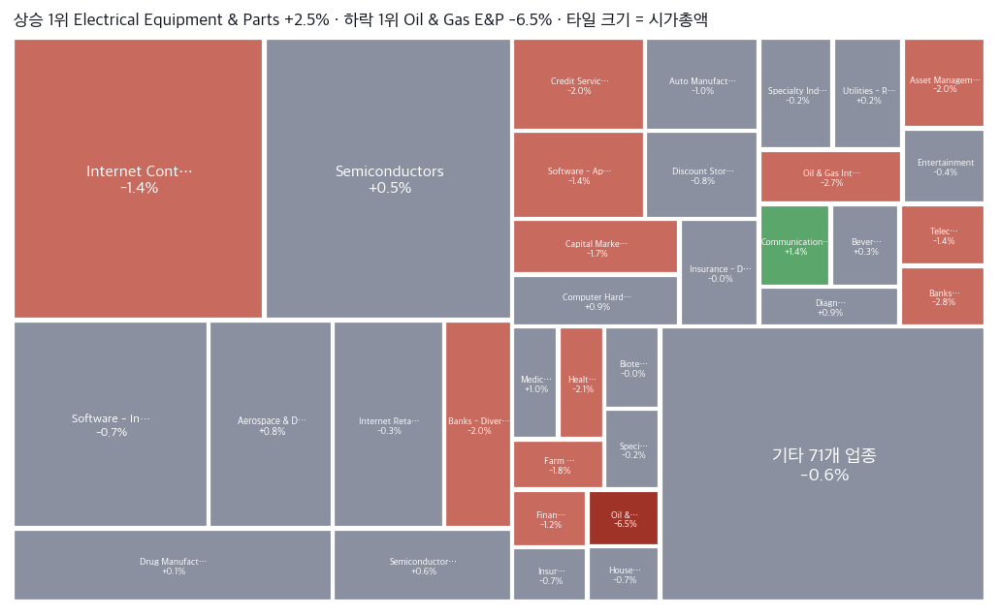
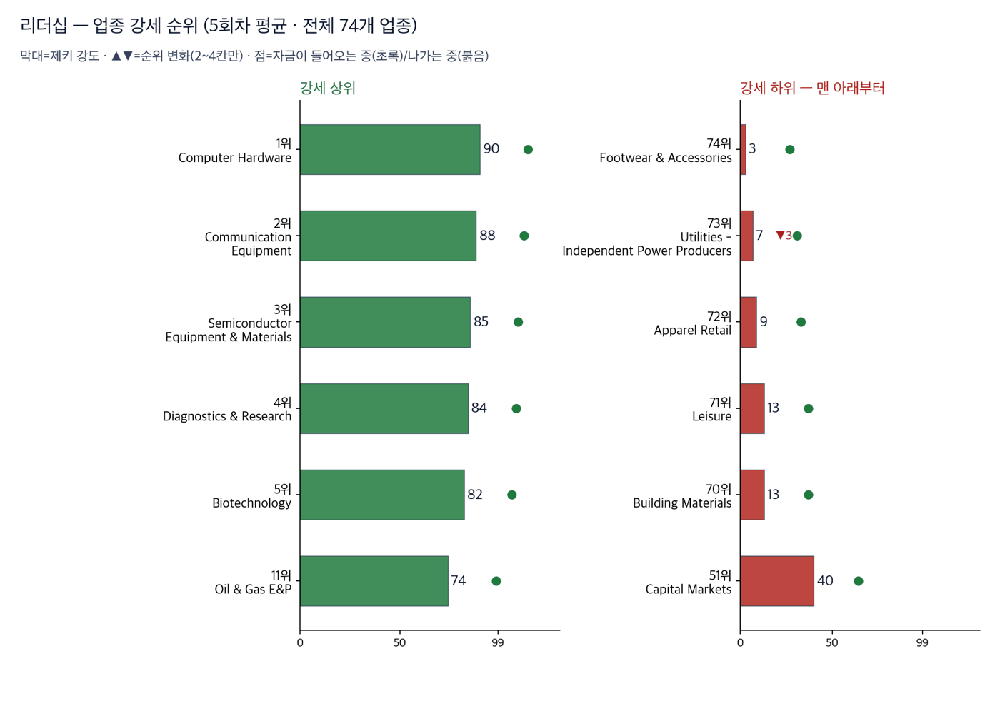
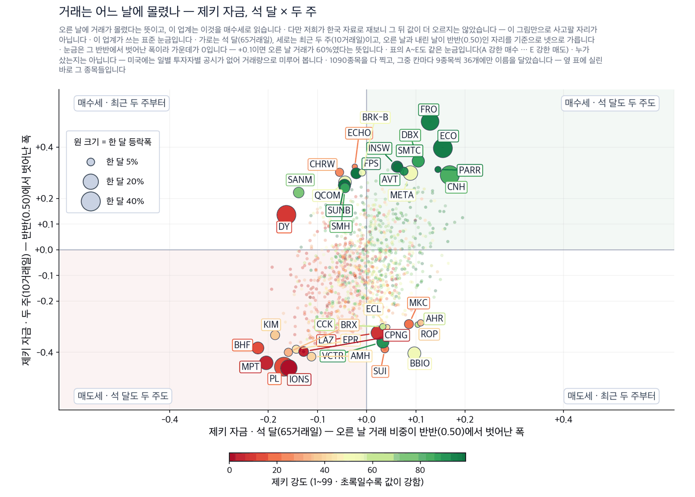
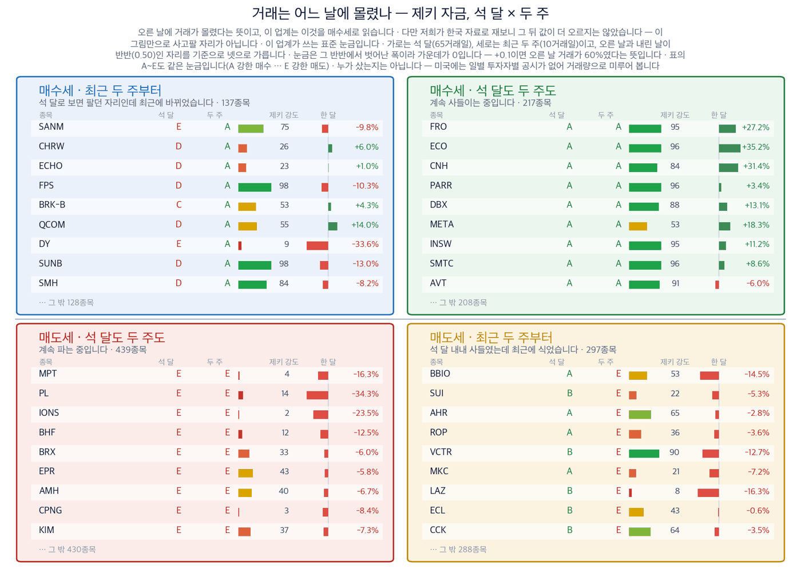
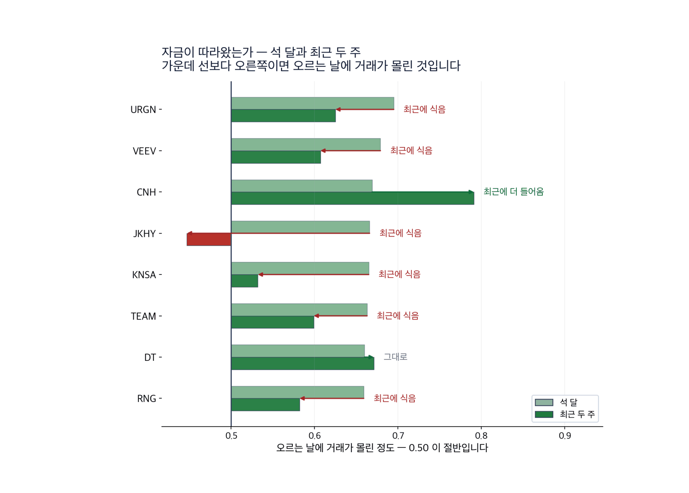
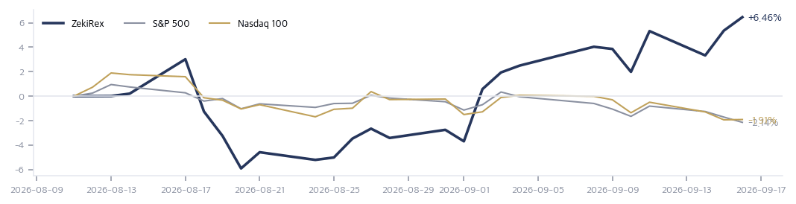

|
ZekiRex™ Apex US — 2026년 9월 17일
오늘의 판단 · 1/2
데이터 기준 9/16 (ET) 종가 · 밤사이 서울 9/16 종가(현지시간) |
ZekiRex™ |
|
|
| 저희가 정한 규칙이 고른 종목과 그 성적을 매일 그대로 싣습니다. 맞았든 틀렸든 지우지 않습니다. |
|
THE REX CALL
연방준비제도가 9월 16일 기준금리를 3.75~4.00%로 올렸습니다. 2023년 7월 이후 3년 2개월 만이고 위원 12명이 전원 찬성했습니다. 다우는 1.21% 내렸습니다.
9월 16일 종가 기준으로 새로 담거나 판 종목은 없습니다. 손절가를 밑돈 종목도 없습니다. 보유는 4종목이고 현금은 28.35%입니다.
오늘 반드시 알아야 할 것
1. 연방준비제도가 9월 16일 기준금리를 0.25%포인트 올려 3.75~4.00%가 됐습니다. 2023년 7월 이후 처음이고 위원 12명이 전원 찬성했습니다. 2. 점도표를 낸 18명 가운데 16명이 연내 추가 인상을 봤습니다. 골드만삭스는 회견을 매파로 읽고 다음 인상 시점을 10월로 옮겼습니다. 한 번과 이어지는 인상은 성격이 다릅니다. 3. 9월 16일 다우는 1.21% 내렸는데 나스닥 종합은 0.01% 내리는 데 그쳤습니다. 러셀 2000은 0.40%, S&P 500은 0.45% 내렸습니다. 인상이 지수를 고르게 누르지 않았습니다. 4. WTI가 9월 16일 3.21% 내렸습니다. 석유개발 업종의 APA(APA)가 5.53% 내렸고, 같은 날 정유·판매의 CVR에너지(CVI)는 1.69% 올랐습니다. 원유를 파는 쪽과 사는 쪽이 갈렸습니다. 5. 미 국채 10년물이 5.01%로 1년 범위의 꼭대기에 섰습니다. 자본시장 업종은 28계단 내려 76위가 됐습니다. 금리가 깎은 것은 이자를 내고 굴리는 쪽입니다.
| |
 이 그림 읽는 법 | 켜진 등 | 오늘의 국면입니다. 초록은 매수 우위, 노랑은 관망, 빨강은 매수 자제입니다. | | 채워진 칸 | 7가지 조건 중 몇 개를 통과했는지입니다. 칸이 많이 찰수록 시장 구조가 튼튼합니다. | | 칸이 다 찼는데 노랑·빨강이면 | 다른 이유로 한 단계 낮춘 것입니다. 그림 아래에 그 이유를 적었습니다. |
|
최근 10거래일 국면 추이 (왼쪽이 과거) 방향 — 어디까지 왔나. 제키 신호등은 7가지 조건을 세어 정합니다. S&P 500·나스닥 종합·러셀 2000이 모두 5가지입니다. 3개가 함께 못 채운 것은 2가지입니다. 50일선 위에 있어야 한다는 조건과, 52주 저점에서 충분히 올라와 있어야 한다는 조건입니다. 장기 구조는 3개 모두 온전합니다. 그래서 노란불이고, 노란불은 매수를 막지 않습니다.
| |
| 오늘의 조치 |
| 오늘 신규 매매 없음. 규칙이 요구하지 않는 날에 거래하지 않는 것도 하나의 결정입니다. |
|
| 오늘 반드시 알아야 할 것 |
|
3년 만의 인상이 때린 것은 지수 전체가 아니었습니다
연준이 9월 16일 기준금리를 올렸습니다. 같은 날 다우는 1.21% 내렸는데 나스닥 종합은 0.01% 내리는 데 그쳤습니다. 10년물은 5.01%, 2년물은 4.40%로 둘 다 올라섰습니다. 달러인덱스도 100.31로 올랐습니다. 금리가 오르자 이자를 내고 굴리는 쪽이 먼저 깎였습니다. 자본시장 업종은 28계단 내려 76위입니다. 같은 날 원유는 3.21% 내렸습니다. 왜 그런가. 두 지면이 같은 결정을 다르게 셉니다. 미국 매체는 매파로 읽힌 회견과 지수 하락을 앞세웠습니다. 한국 매체는 우려가 이미 값에 들어 있었다는 쪽으로 적었습니다. 차이는 주식이 아니라 통화에서 드러났습니다. 9월 17일 서울에서 코스피는 2.56포인트 내린 6,715.41로 마쳤습니다. 같은 날 원·달러 환율은 13.6원 올라 1,382.2원이 됐습니다. (로이터·머니투데이·이데일리) 결정 자체보다 그 다음이 쟁점입니다. 골드만삭스는 다음 인상을 10월로 옮겼습니다. 다음에 무엇이. 9월 18일 일본은행 결정과 유럽의 가스 재고를 함께 보십시오. 유럽 재고가 낮아 이번 겨울 액화천연가스 값이 뛸 수 있다고 로이터가 전했습니다.
그래서 우리는: 은행이나 증권, 부동산처럼 빌려서 굴리는 업종을 들고 계시다면, 이번 인상은 한 번으로 끝나지 않을 수 있습니다. 점도표를 낸 18명 중 16명이 연내 추가 인상을 봤습니다. 확인하실 것은 목표가가 아니라 이자비용 항목입니다. 정유를 들고 계시다면 볼 곳이 다릅니다. 9월 16일에 원유는 내렸는데 정유는 올랐습니다. 정유 이익은 원유 값이 아니라 원유와 제품의 차이에서 나오기 때문입니다. 그래서 유가 기사보다 정제마진을 먼저 확인해 보셔야 합니다. 저희 보유 4종목 가운데 2종목이 정유라는 점은 이 읽기의 약점이기도 합니다. 마진이 좁아지면 2종목이 함께 내립니다.
Rex Lens™
| |
| 그 밖에 알아야 할 것 |
| 18일 일본은행 결정과 156엔대까지 내린 엔화 · 블룸버그는 투자자들이 18일 일본은행 결정을 기다린다고 보도했습니다. 니혼게이자이는 엔화가 156엔대까지 약해졌다고 적었고, 파이낸셜타임스는 미국의 인상이 일본은행에 긴축 압박을 더한다고 전했습니다. (Bloomberg · Nikkei Asia · Financial Times) → 미국 독자에게 중요한 것은 엔화 자체가 아니라 조달 비용입니다. 일본이 움직이면 엔으로 빌려 다른 시장에 넣어 둔 자금의 셈법이 바뀝니다. | | 골드만삭스가 10월로 잡은 다음 인상 · 로이터에 따르면 골드만삭스는 회견을 매파로 읽고 다음 인상 시점을 10월로 바꿔 잡았습니다. 시장이 값으로 치고 있던 것은 이번 한 번이었습니다. (Reuters) → 한 번과 이어지는 인상은 성격이 다릅니다. 10월 회의까지 확인할 것은 물가 지표보다 원유 가격의 방향입니다. | | 장외에서 2조 달러를 넘긴 앤트로픽과 아직 나오지 않은 상장 신고서 · 유로뉴스는 상장 전 장외 시장에서 앤트로픽의 값이 2조 달러를 넘겼다고 보도했습니다. 직전 비상장 투자 때의 두 배가 넘는 값이며, 신고서는 아직 공개되지 않았습니다. (Euronews) → 장외 호가는 공모가가 아닙니다. 확인할 것은 이 숫자가 아니라 신고서에 적힐 매출과 손익이며, 그것이 나오기 전까지는 비교할 기준이 없습니다. | | 다음 주 유엔 총회를 계기로 열릴 이란 관련 회동 · 미국 대통령이 다음 주 화요일 유엔 총회를 계기로 걸프 지도자들을 만나 이란과의 전쟁 이후를 논의할 예정이라고 악시오스가 보도했습니다. (Axios) → 호르무즈가 걸린 문제여서 원유의 다음 방향이 이 자리에서 갈립니다. 회동 날짜가 정해져 있다는 것 하나만으로도 일정표에 적을 값이 있습니다. | | 유럽 재고가 낮아 이번 겨울 액화천연가스 값이 뛸 수 있다는 관측 · 로이터는 유럽의 가스 재고가 낮아 이번 겨울 세계 액화천연가스 값이 급등할 수 있다고 전했습니다. 같은 매체는 현물 값이 이미 올라 아시아 구매자들이 물러섰다고 적었습니다. (Reuters) → 이것은 겨울에 값이 매겨지는 위험이어서 지금 가격에는 들어 있지 않습니다. 확인할 지점은 유럽의 주간 저장률이며, 난방 수요가 시작되기 전에 채워지는지가 갈림길입니다. |
|
한국과 미국을 잇는 것: 이 결정은 뉴욕에 두 번 도착합니다. 먼저 금리와 달러로 옵니다. 다음에는 아시아로 나간 자금이 되돌아오는 길로 옵니다. 9월 17일 서울에서 외국인이 2조 4,606억원을 순매도했다고 머니투데이가 전했습니다. 같은 날 원화는 3주 만에 가장 약했습니다. 아시아에서 빠진 돈이 어디로 가는지가 다음 주 미국 채권 수요를 바꿉니다. |
기준 2026-09-16 15:45 ET 실제 운용 계좌를 그대로 비춥니다 종목·비중·매매·손절가는 모두 실제 계좌의 것입니다. 이 지면에서 고른 것은 하나도 없습니다. 계좌 금액과 주식 수는 싣지 않습니다. 추천이 아닙니다. | 종목 | 비중 | 손익 | 현재가 | 손절가 | 여유 | 보유일 | 다음 이벤트 | | IRDM | 17.9% | −2.3% | $46.95 | $44.87 | +4.6% | 24일 | — | | MPC | 21.1% | +15.3% | $415.06 | $331.32 | +25.3% | 24일 | 실적 11-03 | | DINO | 9.0% | +19.4% | $114.31 | $88.07 | +29.8% | 29일 | 실적 10-29 | | DELL | 23.6% | +28.4% | $560.34 | $401.41 | +39.6% | 24일 | 실적 11-27 | | 현금 | 28.4% | 단기 국채 ETF(USFR)에 예치해 둡니다 |
|
실제로 사고판 기록 | 09-02 | USFR | 매수 | $50.43 | | 08-24 | MPC | 매수 | $360.13 | | 08-24 | IRDM | 매수 | $48.05 | | 08-24 | DELL | 매수 | $436.32 | | 08-19 | DINO | 매수 | $95.73 |
값은 실제로 사고판 값 그대로입니다. 주식 수와 금액은 싣지 않습니다. |
| Rex US Best — 이 뉴스레터에 실린 이름들의 성적표 |
무엇인가. 이 뉴스레터에 이름이 오른 회사들을 모아 만든 지수입니다. 관문을 통과한 종목과 포트폴리오 보유 종목을 합쳐 최대 스물아홉 곳까지, 모두 같은 비중으로 담습니다. 명단은 판이 나가는 날 그대로 적어 두고 뒤에 고치지 않습니다 — 지나고 나서 좋았던 것만 골라 넣으면 어떤 성적표도 좋아 보이기 때문입니다. 무엇을 위한 것인가. 저희가 지면에 적은 이름이 실제로 값을 하는지 숫자로 남기기 위해서입니다. 그래서 같은 기간 S&P 500 · 나스닥 100과 나란히 놓고, 사고파는 비용을 뺀 뒤의 숫자도 함께 싣습니다. 숫자 읽는 법. 제키 강도는 같은 기간 다른 주식과 견준 주가의 힘을 100점 만점으로 매긴 것입니다. 100점에 가까울수록 많이 오른 쪽입니다. 아닌 것. 살 수 있는 상품이 아니고, 추천도 아니며, 저희 계좌의 성적도 아닙니다. |
| Rex US Best | −1.02% | 비용 전 | | 같은 것, 비용 차감 후 | −1.09% | | | S&P 500 | −1.34% | | | 나스닥 100 | −1.42% | |
3거래일치입니다. 짧은 구간은 운과 실력을 가르지 못하므로 120거래일이 쌓이기 전까지는 이 숫자로 판단하지 마십시오. 많이 오른 쪽 | Marex Group MRX | +5.82% | | Materion MTRN | +3.69% | | Dell Technologies DELL | +3.64% — 평소보다 훨씬 많이 거래됐습니다. 값은 1년 최고가에 1% 안쪽까지 왔습니다. |
많이 내린 쪽 | APA APA | −5.53% — 평소보다 훨씬 많이 거래됐습니다. 제키 강도는 90점에서 92점입니다. | | Cenovus Energy CVE | −4.13% | | Slide Insurance Holdings SLDE | −3.06% |
새로 들어온 종목 | Oceaneering International OII, Venture Global VG, Millicom International TIGO | 저희 조건을 새로 갖춰 명단에 올랐습니다 |
빠진 종목 | TG Therapeutics TGTX | 9월 11일부터 3거래일, +3.64%. 제키 강도가 89점으로 내려 58위가 되어 빠졌습니다 | | The Chefs' Warehouse CHEF | 9월 11일부터 3거래일, −0.70%. 제키 강도가 89점으로 내려 33위가 되어 빠졌습니다 | | WisdomTree WT | 9월 11일부터 3거래일, −6.98%. 제키 강도가 89점으로 내려 42위가 되어 빠졌습니다 |
|
| 보유 종목 소식 — 오늘 |
| IRDM | 로켓랩의 인수 절차가 한 걸음 더 나아갔다는 보도가 나왔습니다. — Yahoo Finance 2026-09-15 20:51 UTC | | DELL | 한 애널리스트가 주가가 여기서 20% 더 오를 수 있다고 전망했습니다. — Yahoo Finance 2026-09-15 14:00 UTC |
|
| 관문을 통과한 종목 — 자리가 없어 담지 못한 이름들 |
| 에너지·정유 5 | | LPG Dorian LPG Ltd. | RS 94 | $57.86 | | PSX Phillips 66 | RS 94 | $264.63 | | CVI CVR Energy Inc. | RS 95 | $53.05 | | CVE Cenovus Energy Inc | RS 92 | $32.52 | | KNTK Kinetik Holdings Inc | RS 80 | $53.84 | | 반도체·하드웨어 4 | | MU Micron Technology, I | RS 98 | $926.55 | | AMD Advanced Micro Devic | RS 96 | $512.50 | | P Everpure, Inc. | RS 84 | $97.61 | | QRVO Qorvo, Inc. | RS 83 | $113.97 | | 금융 3 | | SLDE Slide Insurance Hold | RS 92 | $25.67 | | BFH Bread Financial Hold | RS 86 | $107.85 | | TRV The Travelers Compan | RS 81 | $378.92 | | 헬스케어 2 | | PACS PACS Group, Inc. | RS 95 | $42.72 | | INCY Incyte Corporation | RS 82 | $124.75 | | 소재·광물 1 | | CGAU Centerra Gold Inc. | RS 91 | $21.92 |
|
왜 못 담았나. 규칙상 자리는 넷뿐이고 각 자리에 총자산 25%가 들어갑니다 — 한 종목이 −8%에 걸려도 계좌 전체로는 2% 손실이 되도록 맞춘 구조입니다. 자리를 비우는 길은 손절과 오실레이터 이탈 둘뿐이라, 더 좋은 후보가 나와도 갈아타지 않습니다.
통과 목록이 말하는 것. 61개가 35개 업종에 흩어져 있고 상위 3개 업종을 합쳐도 13종목(21%)뿐입니다. 시장의 강세는 넓습니다. 우리 4자리는 에너지·정유 2, 반도체·하드웨어 1로 나뉘어 있고 가장 큰 쪽이 에너지·정유입니다 — 그래서 하루 등락이 지수와 평균 1.4%p 벌어졌고, 가장 크게 갈린 8/18 세션에는 S&P 500 보다 3.6%p 더 내렸습니다. (업종 미확인 1종목 제외) 아래는 그중 종합점수 상위 15개이며, 매수 추천이 아니라 자리가 열리면 작업을 시작할 순서입니다. |
| 핵심 지표 |
S&P 500 7,552 -0.45% · 고점 −3.2% 7,552로 0.45% 내렸습니다. 52주 고점에서 3.2% 아래입니다. 7가지 조건 가운데 5가지를 통과했습니다. 못 채운 것은 50일선 위에 있어야 한다는 조건입니다. 같은 날 다우가 1.21% 내린 것과 견주면, 인상이 지수를 고르게 누르지 않았다는 뜻입니다. 상단권 | 나스닥 종합 25,978 -0.01% · 고점 −4.1% 25,978로 0.01% 내렸습니다. 52주 고점에서 4.1% 아래입니다. 인상 당일에 제자리를 지킨 것은, 이번 결정이 성장주 전체를 누른 것이 아님을 보여 줍니다. 상단권 | 러셀 2000 2,859 -0.40% · 고점 −6.8% 2,859로 0.40% 내렸습니다. 52주 고점에서 6.8% 아래로 지수 4개 중 가장 멀리 있습니다. 빌린 돈에 기대는 작은 회사가 많아 금리에 먼저 반응합니다. 박스권 | 미 국채 10년 5.01% 5.01%로 1년 범위의 꼭대기입니다. 2년물 4.40%, 30년물 5.35%로 곡선 전체가 올라와 있습니다. 지금 값을 정하는 것은 실적이 아니라 채권입니다. 과열 | 달러인덱스 100.3 상단권 | 포트폴리오 +6.46% 현금 28% · 보유 4종목 8월 11일 이후 6.46%입니다. 같은 기간 S&P 500 상장지수펀드는 2.14% 내렸고 나스닥100 상장지수펀드는 1.91% 내렸습니다. 차이는 정유 2종목과 델(DELL)에서 나왔습니다. 설정 이후 |
|
| 한 줄 정리: 제키 신호등은 노란불입니다. 9월 16일 연준이 금리를 올렸고 다우는 1.21% 내렸습니다. 같은 날 계좌는 1.05% 올랐습니다. 두 숫자는 어긋나지 않습니다. 내린 쪽은 이자를 내고 사업하는 회사들입니다. 오른 쪽은 원유를 사서 제품을 파는 회사들입니다. 노란불은 매수를 막지 않습니다. 위험은 종목마다 손절가로 관리합니다. |
|
|
|
판단의 근거 · 2/2
데이터 기준 9/16 (ET) 종가 · 밤사이 서울 9/16 종가(현지시간) |
ZekiRex™ |
|
|
 Rex Pulse™ — 지수·가상자산 / 통화 / 원자재 / 채권 16종, 1년 흐름과 50일 평균값(점선) · 기준 뉴욕 9/16 종가, 서울 9/16 종가(현지시간) |
제키 신호등은 노란불입니다. 9월 16일 기준으로 지수 3개 모두 장기 구조가 온전합니다. 다만 셋 다 50일선 아래에 있습니다. 채권 쪽은 다릅니다. 10년물 5.01%는 1년 범위의 꼭대기이고 2년물과 30년물도 함께 올라와 있습니다. 주식은 가운데에 있고 채권은 끝에 있다는 뜻입니다. 달러인덱스는 100.31로 올랐습니다. 금리와 달러가 함께 오르면 해외 매출 비중이 큰 회사의 환산 이익이 깎입니다. 그래서 다음 실적에서는 매출보다 환산 항목을 먼저 확인해 보셔야 합니다. |
 색은 당일 등락(짙을수록 큼), 타일은 시가총액입니다. 상단에 당일 상승·하락 1위가 적혀 있고, 큰 칸이 움직인 날이 지수가 움직인 날이라는 뜻입니다 — 아래 리더십 순위(추세의 힘)와 함께 읽으십시오. |
| 리더십 — 업종 강세 순위 |
 이 그림 읽는 법 | 막대 | 업종 소속 종목의 제키 강도 중앙값입니다. 최근 5회차를 평균해 하루치 흔들림을 걷어냈습니다. | | ▲▼ 숫자 | 하루 전보다 순위가 몇 칸 움직였는지입니다. 1칸은 너무 작고 5칸 이상은 절반이 되돌아와서(실측) 2~4칸만 적습니다. | | 점 | 20거래일 자금 순위의 방향입니다. 초록이면 들어오는 중, 붉으면 나가는 중입니다. | | 공동 순위 | 값이 같으면 같은 순위입니다. 억지로 가르지 않습니다. | | 강세 상위 | 강도가 가장 높은 업종들입니다. 자리가 열리면 여기서부터 찾습니다. | | 강세 하위 | 전체 업종 가운데 맨 아래입니다. 번호는 왼쪽과 같은 잣대라, 38개 업종이면 38위가 가장 약합니다. 지금 새로 살 자리가 아니고, 들고 계신 종목이 여기 속하면 손절가부터 확인하실 자리입니다. 바닥에서 돌아서는 업종은 막대보다 점이 먼저 초록으로 바뀝니다. | | 번호가 건너뛰면 | ＋ 표시가 붙은 업종입니다. 맨 아래 다섯에 들지는 않았지만 본문이 짚었거나 저희가 들고 있어 함께 실었습니다. 자료가 빠진 것이 아닙니다. |
| 순위 | 업종 | 제키 강도 | 변화 |
|---|
| 1위 | Computer Hardware | 90 | | | 2위 | Communication Equipment | 88 | | | 3위 | Semiconductor Equipment & Materials | 85 | | | 74위 | Footwear & Accessories | 3 | | | 73위 | Utilities - Independent Power Producers | 7 | ▼3 | | 72위 | Apparel Retail | 9 | |
|
| 외국인과 기관 — 돈이 실제로 어디로 갔나 |
 이 그림 읽는 법 | 점 하나 | 종목 하나입니다. 가로·세로 위치가 두 값을 그대로 나타내고, 가운데 가로·세로로 그어진 두 선이 기준선입니다. 네 귀퉁이의 이름표가 그 칸의 뜻입니다. | | 점 크기 | 최근 한 달 등락폭입니다. 오르든 내리든 크게 움직였으면 큰 점입니다. | | 점 색 | 제키 강도입니다. 초록일수록 주가가 시장에서 강합니다. | | 30종목만 | 이름이 겹치면 못 읽기 때문입니다. 가운데 몰린 나머지는 움직임이 거의 없는 종목들이라 뺐습니다. |
 이 그림 읽는 법 | 이 그림이 말하지 않는 것 | 같은 기간의 수급과 등락을 나란히 놓은 것입니다. 앞으로 오를지는 말하지 않습니다 — 저희가 직접 검정했고 앞을 내다보는 힘을 찾지 못했습니다. 제키 강도와 함께 보실 자리이지, 이것만으로 사고파실 자리가 아닙니다. | | 네 칸 | 가로와 세로 두 값이 각각 기준선을 넘었는지로 넷을 가릅니다. 오른쪽 위는 둘 다 넘은 곳, 왼쪽 아래는 둘 다 못 넘은 곳, 나머지 두 칸은 한쪽만 넘은 곳입니다. 칸 이름이 그 칸에 든 종목의 상태를 한 문장으로 적어 둔 것입니다. | | 가운데 두 칸 | 두 기간을 견주는 자리입니다. 글자 A~E가 있으면 이 업계가 쓰는 표준 등급으로, A는 강한 매수, B는 매수 우세, C는 매수와 매도가 반반, D는 매도 우세, E는 강한 매도를 뜻합니다(전체를 다섯으로 나눈 순위라 A가 상위 20%입니다). 숫자가 있으면 그 기간에 산 양에서 판 양을 뺀 것입니다. | | 칸마다 9종목 | 그 칸에서 움직임이 가장 큰 순서입니다. 나머지는 칸 아래에 몇 종목인지만 적었습니다. 옆 산점도가 이름을 다는 종목이 바로 이 9종목씩입니다. | | 한 달 막대 | 0을 가운데 두고 오른쪽이 상승, 왼쪽이 하락입니다. 길이는 같은 칸 안에서만 서로 견주십시오 — 칸마다 기준이 다릅니다. | | 제키 강도 | 1~99 순위입니다. 막대가 길수록, 초록에 가까울수록 그 종목의 주가가 시장에서 강합니다. |
 이 그림 읽는 법 | 막대 둘 | 위가 석 달, 아래가 최근 두 주입니다. 같은 종목의 두 기간을 나란히 놓았습니다. | | 가운데 선 | 0.50 입니다. 오른쪽이면 오르는 날에 거래가 더 몰렸고, 왼쪽이면 내리는 날에 몰렸습니다. | | 화살표 | 석 달에서 두 주로 가는 방향입니다. 오른쪽으로 가면 최근에 더 들어온 것이고, 왼쪽이면 식은 것입니다. | | 맨 오른쪽 글씨 | 그 방향을 말로 적은 것입니다 — 「최근에 더 들어옴」이면 자금이 이어지는 중입니다. |
미국에는 일별로 누가 샀는지 공시가 없습니다. 기관 보유는 분기에 한 번 그것도 45일 늦게 나옵니다. 그래서 이 그림은 사람이 아니라 거래를 봅니다 — 0.50 이 기준이고, 오른쪽으로 갈수록 석 달 동안, 위로 갈수록 최근 두 주 동안 오르는 날에 거래가 몰렸다는 뜻입니다. 업종 — 값의 강세와 돈의 흐름을 나란히 돈이 먼저 온 곳 — 값은 아직입니다 | 업종 | 강세 | 자금 | 20거래일 |
|---|
| Information Technology Services | 94 | 14 | +0.023 | | Packaged Foods | 103 | 31 | +0.003 | | Specialty Business Services | 87 | 23 | +0.008 |
값만 센 곳 — 돈은 빠지고 있습니다 | 업종 | 강세 | 자금 | 20거래일 |
|---|
| Semiconductor Equipment & Materials | 4 | 77 | -0.039 | | Electronic Components | 13 | 82 | -0.043 | | Oil & Gas Equipment & Services | 20 | 84 | -0.044 |
강세 순위 — 제키 강도(12개월 가중)로 세운 순위입니다. 최근 5회차를 평균해 하루치 흔들림을 걷어냈습니다. 자금 순위 — 20거래일 순매수로 세운 순위입니다. 값이 아니라 **돈이 들어온 양**을 봅니다. 공동 순위 — 값이 같으면 같은 순위를 줍니다. 억지로 가르지 않습니다. 두 순위가 어긋나면 — 그 자리가 볼 만합니다. 돈이 먼저 오면 값이 아직인 것이고, 값이 먼저 세면 돈이 빠지는 중일 수 있습니다. |
| Rex 25™ — 당일 등락률 전체 순위 |
| 01 MRX Marex Group+5.82% | | 02 MTRN Materion+3.69% | | 03 ● DELL Dell Technologies+3.64% | | 04 LPG Dorian LPG+1.83% | | 05 CVI CVR Energy+1.69% | | 06 AMD Advanced Micro Devices+1.65% | | 07 ● DINO HF Sinclair+1.53% | | 08 PACS PACS Group+1.50% | | 09 ● MPC Marathon Petroleum+0.75% | | 10 GEO Geo Group Inc (The) RE+0.54% | | 11 MGNI Magnite+0.30% | | 12 MU Micron Technology-0.11% | | 13 PSX Phillips 66-0.11% | | 14 MT Arcelor Mittal NY Regi-0.11% | | 15 TIGO Millicom International-0.28% | | 16 CGAU Centerra Gold-0.72% | | 17 OKTA Okta-1.22% | | 18 BJRI BJ's Restaurants-1.23% | | 19 CXW CoreCivic-1.27% | | 20 OII Oceaneering Internatio-2.24% | | 21 DAVE Dave-2.36% | | 22 SLDE Slide Insurance Holdin-3.06% | | 23 CVE Cenovus Energy-4.13% | | 24 VG Venture Global-4.19% | | 25 APA APA-5.53% |
|
8,021종목 가운데 61종목이 저희 기준을 넘었고 그중 위 25종목을 싣습니다. 상승 쪽 맨 위는 마렉스그룹(MRX)으로 9월 16일 5.82% 올랐습니다. 다음은 머테리온(MTRN) 3.69%, 델(DELL) 3.64%입니다. 델은 거래량이 50일 평균보다 72% 많았습니다. 하락 쪽은 APA(APA) 5.53%, 벤처글로벌(VG) 4.19%, 세노버스에너지(CVE) 4.13%입니다. 3종목 모두 원유와 가스를 파는 쪽입니다. 여기서 한 가지는 짚고 넘어가야 합니다. 마렉스는 자본시장 업종이고, 그 업종은 같은 날 76위로 내려왔습니다. 두 숫자는 재는 기간이 다릅니다. 그 상승은 하루치이고 76위는 12개월 강도입니다. 명단에는 3종목이 들어오고 3종목이 빠졌습니다. 명단 안에서 석유가 두 쪽으로 갈렸다는 뜻입니다. 내린 3종목은 원유와 가스를 팝니다. 오른 쪽의 CVR에너지(CVI)와 도리안LPG(LPG)는 원유를 사서 정제하고 나릅니다. 그래서 에너지 종목은 업종 이름이 아니라 어느 쪽에 서 있는지를 먼저 확인해 보셔야 합니다. |
| ● 표시가 우리 보유 종목입니다. 순서는 등락률만 따릅니다 — 하락 상위에 보유 종목이 있어도 그 자체가 매도 신호는 아닙니다. 매도는 −8% 손절과 오실레이터 이탈, 둘뿐입니다. |
| 보유 비중 — 하한 8% / 진입 25% |
| Dell Technologies DELL23.6% | | Marathon Petroleum MPC21.1% | | Iridium Communications IRDM17.9% | | HF Sinclair DINO9.0% |
25%는 진입 시점의 크기이지 보유 한도가 아닙니다. 오른 종목을 크다는 이유로 줄이지 않습니다. |
 성과 기준일은 8월 11일입니다. 그날 이후 포트폴리오는 6.46%이고 S&P 500 상장지수펀드는 2.14%, 나스닥100 상장지수펀드는 1.91% 내렸습니다. 이 차이를 실력으로 읽지 마십시오. 한 달 남짓이고 종목은 4개뿐입니다. 차이의 대부분은 정유 2종목과 델(DELL)에서 나왔습니다. 3종목이 만든 성과라는 뜻입니다. 그 3종목이 돌아서면 같은 크기로 사라집니다. 그래서 이 숫자를 기대수익으로 읽으시면 안 됩니다. 정유 2종목이 같은 방향으로 움직인다는 점을 함께 확인해 보셔야 합니다. |
| 2026-09-16 종가 기준 심사 8,021종목 중 등급 산출 4,004종목 가운데 61종목이 조건을 통과했습니다. 조건 통과는 매수 추천이 아닙니다. |
| 출처: 야후 파이낸스, 16:00 ET 종가 · 서울외국환중개 고시환율(네이버 금융) · 네이버 금융 · 야후 파이낸스 |
|
본 리포트는 정보 제공 목적이며 개별 투자 자문이 아닙니다. ZekiRex™ Apex US는 1,000만 달러 규모의 모의 포트폴리오를 규칙 기반으로 운용합니다. 실제 계좌도, 주문도, 사고판 일도 없습니다. 표시된 성과에는 수수료와 세금, 매매 시 가격 미끄러짐이 반영되지 않았습니다. 종목 자료에는 상장폐지된 회사가 빠져 있습니다. 그래서 성과가 실제보다 높게 나오는 치우침(생존편향)이 있습니다. 과거의 성과는 미래를 보장하지 않으며, 투자에는 원금 손실 위험이 따릅니다. |
| This is the Rex Way, ZekiRex™ |